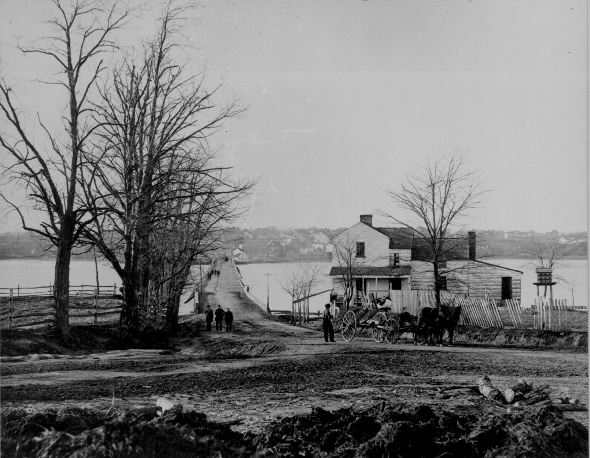

Chapter 3
The Sergeant at the Navy Yard Bridge
The Navy Yard Bridge rose in the darkness as a wooden skeleton against the faint glow of Washington’s eastern sky, its planks muffling the hoofbeats of two horses approaching from the city side. Sergeant Silas T. Cobb of the First Massachusetts Heavy Artillery stood at the near end with a detail of three men, performing a duty that had become mechanical through repetition. Since the war’s beginning, this crossing had served as the capital’s eastern gate, a checkpoint where passes were examined, identities questioned, and the traffic of a nation at war filtered through military protocol. Cobb was twenty-four years old, a printer’s son from Massachusetts who had learned to read type before he learned to read men. On this night, that distinction would matter. The vacuum of authoritative information from the city allowed two riders to approach, their identities and purpose still unconnected to the shooting at Ford’s Theater.
The riders emerged from the obscurity of the road as shapes first, then as particulars. The lead horse carried a man in dark clothing, well-mounted, with the easy posture of someone accustomed to attention. Behind him came a younger rider, less assured, keeping close as if drawn by an invisible tether. Cobb advanced to meet them, holding his lantern at chest height. The light caught the lead rider’s face: a handsome man, pale, with dark hair and mustache, his features composed in an expression of mild impatience rather than anxiety. Here was the face of a man who expected deference, and who had received it often enough to feel its absence as an affront.
Cobb asked for their passes. The request was not a question but the formula of his station, the verbal equivalent of the barrier arm that did not exist on this bridge.
The rider did not reach for papers. Instead he leaned slightly forward in his saddle, bringing his voice to a conversational register that assumed intimacy across the space between them. He stated that he had none, that he was going home to Charles County, that his name was Booth, that he was a theatrical star well known in Washington.
The words landed with theatrical precision, each one placed for effect. Cobb would remember them exactly, would repeat them under oath before the military commission that gathered evidence in the weeks following. The claim of theatrical celebrity carried a particular weight in that moment. Washington had spent the war years saturated with performance—operas, plays, lectures, the endless round of patriotic entertainments that filled the evenings of a government city. A theatrical star occupied a recognized category, a person whose name might not be personally known to Cobb but whose social existence was plausible, even expected. The rider’s clothing supported this: dark broadcloth, fine boots, the gloves of a man who did not work with his hands.
Cobb hesitated. The protocol was clear—no pass, no passage—but it had also grown elastic through four years of war. Washington’s social geography was dense with exceptions: congressmen, officers, contractors, the retainers of powerful houses, all moving through checkpoints on recognition rather than documentation. The rider’s confidence suggested he belonged to this class of the recognized. More pressingly, no alarm had reached the bridge. The city behind them remained, to Cobb’s knowledge, undisturbed; no courier or signal had interrupted the routine of his watch.
He let them pass.
The rider touched his hat—a gesture of acknowledgment that also served as dismissal—and urged his horse onto the bridge planks. The second rider followed without speaking, keeping his face lowered. Cobb watched them cross, the sound of hooves diminishing into the Maryland darkness. He would not learn what he had permitted until morning, when the telegraph brought word of the assassination and the description of the murderer: John Wilkes Booth, actor, five feet eight inches, black hair, mustache, well-dressed, riding a bay mare with a white star on her forehead.
The bridge Cobb guarded was not merely a convenience but a strategic necessity. The Anacostia River, then called the Eastern Branch, divided Washington from the county that bore its name, a jurisdiction that extended southeast toward the Potomac and the Virginia shore beyond. For a fugitive from the capital, this crossing represented the final threshold of federal control.
Once on the far bank, a rider entered territory where Union authority existed as a thin membrane over older loyalties. Southern Maryland had voted for secession in 1861, had supplied recruits to Confederate armies, had maintained through the war an underground network of couriers, safe houses, and hidden boat landings that served the rebellion’s intelligence operations.
The region’s population was predominantly Catholic, tobacco-growing, slaveholding—demographically and culturally distinct from the Protestant, commercial, free-labor society of the District’s northwest quadrant. Booth knew this geography intimately. His conspiracy had drawn its personnel from these counties, its routes from the paths that Confederate agents had traced through four years of clandestine traffic.
The encounter at the bridge lasted perhaps ninety seconds and embodied a larger pattern that would govern the manhunt’s opening hours. Booth’s escape depended not on elaborate deception but on information failing to travel faster than his horse. At Ford’s Theater around 10: 15 p. m., a woman’s cry from the presidential box had spread through the audience as confusion rather than comprehension. Major Henry Rathbone shouted for someone to pursue while blood streamed from his arm; his shout dissolved in evacuation chaos. The actor’s leap to stage and exit through alley door unfolded in perhaps thirty seconds—witnessed by hundreds but understood by none as opening movement of planned flight.
By 10: 30 p. m., when Cobb examined the riders at the bridge, no organized pursuit had begun. Secretary of War Edwin Stanton, at his home on K Street, had not yet received confirmation of the attack. The military telegraph, which would coordinate the manhunt, remained silent. The capital’s police force, numerically small and administratively fragmented, had not been alerted. Booth was exploiting what military theorists would later call the fog of war—the gap between an event and its recognition, between recognition and response, between response and effective action. This gap would persist for hours, then narrow unevenly, creating a moving boundary of danger and safety that Booth would navigate for twelve days.
David Edgar Herold, the younger rider who crossed with Booth, represented a different species of conspirator. Where Booth acted from theatrical self-conception and political fanaticism, Herold moved from shallower motives—admiration for the actor, excitement of participation, perhaps the promise of future advantage. Born in 1842 to a middle-class Washington family, trained as a pharmacist’s assistant, Herold had drifted into Booth’s circle through the social margins of the theatrical world. He was slight, beardless, excitable—the physical and temperamental opposite of his leader.
On the bridge, his silence may have served discretion, or it may have reflected the paralysis of a man suddenly comprehending the magnitude of his commitment. Herold would accompany Booth to the home of Samuel Mudd, would share the pine thicket days, would surrender finally at the Garrett farm when the tobacco barn burned around them. His presence on the bridge marked him as committed beyond recall, a fellow traveler in a flight that had begun with his assistance and would end with his execution.
The Navy Yard Bridge itself had been constructed in 1820, rebuilt and maintained by the federal government as part of the capital’s infrastructure. Its military significance had increased with the war, as the Anacostia’s eastern shore became the site of army installations, supply depots, and the naval yard that gave the crossing its name.
Cobb’s detachment was one of several rotating through the bridge’s guard duty, a routine assignment that offered little expectation of incident. The sergeant’s decision to admit Booth without pass would be examined repeatedly in the investigation that followed, and Cobb would defend himself with the honesty of a man who had acted within the visible parameters of his duty. No alarm had reached him. The rider’s appearance and manner suggested legitimate business. The war had created countless such moments of administrative discretion, where formal rules yielded to practical judgment. Cobb had made one such judgment, and it had been wrong.
The error was not individual but systemic. The bridge guard operated as a node in a network that had not yet been activated. The telegraph lines running to military headquarters, the courier system connecting police stations, the verbal networks of alarm and response—all remained inert while Booth rode eastward. This was the first of several institutional failures that would characterize the manhunt’s opening phase: the failure of Ford’s Theater staff to secure the alley door, the failure of the presidential guard to maintain his post, the failure of the city police to establish immediate cordons, the failure of military communication to outpace a man on horseback. Each failure was comprehensible in isolation, explicable by routine, fatigue, the assumption that extraordinary events required extraordinary evidence. Cumulatively, they created the temporal and spatial margin within which Booth’s escape became possible.
The geography that received Booth and Herold was not welcoming wilderness but working countryside, its darkness inhabited by farmers, watermen, the retainers of great estates. The Brandywine Pike, which they followed from the bridge, was a maintained road connecting the capital to the tobacco ports of the lower Potomac.
Booth knew its landmarks: the Surratt tavern at the nine-mile mark, where weapons and supplies had been cached for the kidnapping plot that had preceded the assassination; the branching roads that led toward the river crossings into Virginia; the scattered farmhouses where Confederate sympathizers might offer shelter or at least silence. This knowledge had been acquired through months of preparation, through the cultivation of Mary Surratt and her son John, through reconnaissance disguised as theatrical touring and social visiting. The conspiracy had existed as intention long before it crystallized as action, and its material infrastructure—horses, weapons, safe houses, river contacts—awaited activation.
The riders maintained a pace that balanced speed against the hazards of night travel. Booth’s horse, a bay mare rented from a stable near the theater, was fresh and responsive. Herold’s mount, similarly acquired, kept pace without difficulty. The road surface was dry, the April night mild, conditions that favored rapid movement. Behind them, Washington remained unaware of their passage, its gas lamps burning over streets where the news of assassination was still spreading as rumor rather than confirmed catastrophe. The contrast between the city’s gathering alarm and the riders’ solitary progress would widen through the night, creating the temporal structure of the manhunt: pursuit always arriving after the fugitive’s departure, information always lagging behind event.
At the Surratt tavern, approximately nine miles from the bridge, Booth and Herold would arrive around midnight. This waystation served the legitimate traffic of the pike while maintaining its clandestine function as a Confederate depot. The weapons cached there—carbines, pistols, ammunition—had been stored for the kidnapping plot, intended to arm the party that would seize Lincoln and carry him south. That plot, abandoned after the fall of Richmond, had left its material preparations in place, available for the assassin’s use. The tavern’s operator would later testify that Mary Surratt had visited on the afternoon of April 14, delivering a package and instructions that indicated imminent need. This coordination suggested planning that extended beyond Booth’s individual impulse, a network of support that would become the prosecution’s central claim in the conspiracy trial.
But between the bridge and the tavern, the riders moved through darkness that was literal and metaphorical. The rural night offered concealment but also uncertainty—uncertainty about road conditions, about the reliability of anticipated assistance, about the speed with which pursuit might materialize. Booth’s composure at the bridge, his theatrical self-presentation to Cobb, did not guarantee equivalent success in subsequent encounters. Each threshold crossed would require renewed performance, renewed risk, renewed dependence on the very infrastructure of Confederate sympathy that the war’s conclusion had begun to dismantle.
The institutional response that Cobb’s checkpoint represented would accelerate dramatically once the alarm reached authoritative channels. Secretary Stanton, receiving confirmation of the shooting at approximately 10: 30 p. m.—the moment of Booth’s bridge crossing—had reacted with characteristic energy. The military telegraph was ordered to transmit descriptions and warnings. Cavalry detachments were directed to secure road exits. The Washington police were placed under military coordination. Yet these measures, however prompt in conception, faced the friction of implementation. The telegraph required operators, lines, decoding time. Cavalry required saddling, mounting, direction. The police required communication with a headquarters that had no established procedure for assassination response. Each minute of administrative preparation added to Booth’s margin of escape.

The bridge encounter thus stands as a compressed emblem of the manhunt’s essential character: a contest between individual movement and institutional response, between the speed of a man who knew exactly where he was going and the slower mobilization of a system that had to discover what had happened before it could act. Cobb’s decision, examined in isolation, appears as a failure of vigilance. Examined in context, it reveals the dependence of all security systems on timely information. The sergeant had been trained to recognize threats that had been identified, to verify identities against documentation, to report anomalies to superior authority. None of these protocols addressed the possibility that the first indication of a national catastrophe might arrive at his post in the person of a well-dressed actor claiming theatrical celebrity as his credential.
The Maryland shore that received Booth and Herold was not yet enemy territory, but it was territory where federal authority ran through local consent rather than direct control. The civil administration remained in place, the courts functioned, the mail moved under federal supervision. Yet beneath this surface of Union governance, the social fabric retained its Confederate weave. Families had sons in southern armies or southern graves. The Catholic gentry maintained their connections to the Church hierarchy that had never endorsed the war against the slave states. The tobacco economy, damaged by emancipation and military requisition, looked southward for its recovery. Booth’s conspiracy had drawn upon these loyalties without fully comprehending their postwar fragility. The assistance he expected, the silence he counted upon, would prove less reliable than his planning assumed.
The riders pressed on through darkness that seemed to thicken as they left the capital’s luminous margin. The road required attention: ruts and potholes, the sudden appearance of farm animals, the uncertain behavior of horses in unfamiliar territory. Booth’s physical condition added complication. The fall from the presidential box had injured his left leg—perhaps a fracture of the fibula, perhaps severe bruising and sprain. He rode with the affected limb extended, minimizing pressure, adapting his posture to pain that would worsen with hours in the saddle. This injury, the product of his theatrical exit, would shape the logistics of his flight, determining the pace of travel, the choice of refuge, the medical attention he would require from Samuel Mudd.
Herold’s role as companion became operational at this stage. The younger man knew the countryside, had participated in the reconnaissance that prepared the kidnapping route. His presence allowed Booth to focus on riding, to conserve the energy required for subsequent performances of identity and purpose. The pharmacist’s training may also have served immediate need: rudimentary treatment of the injured leg, management of pain through available drugs. This division of labor—Booth as decision and performance, Herold as logistics and support—would persist through the days of flight, until the final confrontation at the Garrett farm when Herold’s nerve failed and Booth’s would not.
The temporal structure of this night would be reconstructed with precision in subsequent investigation. The shooting at 10: 15 p. m. The bridge crossing at approximately 10: 30 p. m. The arrival at Surratt’s tavern around midnight. Each timestamp represented a fixed point against which the fugitives’ progress could be measured and the pursuers’ delay calculated. This reconstruction, however accurate in its particulars, could not recover the experiential quality of the flight: the darkness, the solitude, the accumulating weight of irrevocable action. Booth had crossed from the realm of theatrical conspiracy into the realm of accomplished fact, and the passage was marked by no ceremony except the creak of bridge planks and the sergeant’s lantern receding behind him.
The Navy Yard Bridge would survive this night as infrastructure, but its significance would be permanently altered. In the manhunt’s immediate aftermath, military guards were doubled, procedures tightened, the discretionary authority that Cobb had exercised eliminated by explicit order. The bridge became a symbol of the vulnerability that assassination had exposed, the permeability of a capital that had imagined itself secure. Tourists would later visit the site, seeking the physical location of a famous decision, finding only the ordinary structure of a wooden span across an urban river, its significance entirely retrospective.
For Cobb, the consequences were immediate and lasting. Summoned before the military commission investigating the conspiracy, he testified with the detail of a man who had replayed the encounter countless times, searching for the moment where different judgment might have altered outcome. His account of Booth’s self-identification, his own decision to admit without pass, his observation of the second rider’s reticence—all entered the official record as evidence of how the escape had been accomplished. The commission found no basis for disciplinary action; Cobb had violated no explicit order, had acted within the customary practice of his post. But the finding of procedural regularity did not erase the knowledge of consequential error. The sergeant had looked at the face of history and seen only another traveler in the night.
The bridge as threshold, the checkpoint as node of failure, the individual decision as pivot of large consequence—these patterns would repeat through the twelve days of flight and pursuit. Each encounter between Booth and the institutions of federal authority would test the same variables: the speed of information, the clarity of identification, the balance between routine and emergency response. The fugitive’s survival would depend on maintaining his lead against a system that grew more organized, more informed, more resourceful with each passing hour. The margin that Cobb’s error had created would narrow progressively, until it closed at the Garrett farm with the smoke of burning tobacco and the crack of Boston Corbett’s pistol.
But that condensation lay in the future. At 10: 30 p. m. On April 14, 1865, two riders moved eastward through darkness that seemed to offer indefinite extension. The city behind them had not yet begun to scream. The countryside before them held possibilities that planning had prepared and circumstance would test. The bridge, crossed and receding, marked the boundary between what had been attempted and what must now be survived. Booth had made his entrance; the performance continued into an act without script, without audience, without the assurance of curtain call.
The road to Southern Maryland opened before them, its surface visible only as the slightly lesser darkness between the trees. The Confederate underground that Booth expected to receive him existed now as memory and scattered individuals, the network of a cause that had surrendered its capital nine days before. The assistance he would find—at the tavern, at Mudd’s house, in the pine thicket with Thomas Jones—would be given by men who had not yet accepted the finality of defeat, who saw in the assassin a last gesture of southern resistance or simply a fellow human in desperate need. This territory of collapsing loyalties and uncertain commitment would be Booth’s refuge and his limitation, the medium in which he could hide but not escape, survive but not prevail.
Having crossed the Anacostia unchallenged, Booth and Herold are now on the dark road to Southern Maryland, moving into the territory of a collapsing Confederate underground.